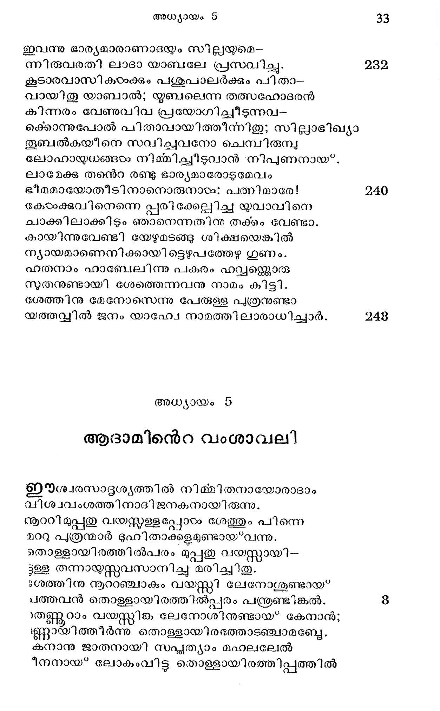

പറുദീസയ്ക്ക പുറത്തുള്ള നിവാസം
ീതആൃനന്ദപറുദീസിന്നതിര് വിട്ടകലെയായ*
മാനവര് നിജദേഹമൃത്തെടുത്തുള്ളാസ്ഥലം
ഘാണങ്ങു കൃഷി ചെയ്*വാ നമലന് കല്ലിക്കയാ-
ലാനതശിരസ്കരായ* പോയവരവിടത്തില്.
-.എത്തിയാസ്ഥലത്തവര് കടുതാം പ്രയത്റത്താല്
-ക്യത്തുഷാപരി ഹാരം നേടിനാര് പ്രതിദിനം.
ഏങ്കിലുമിക്കാലത്തേ ഭൂവിലും ബഛ്ുപുഷ്മി
തങ്കുന്ന തുംഗരംഗമായിരുന്നന്നീ ധാത്രി
കാനുഷരുടെ പാപക്ഷാര മൂത്തികയത്രെ
“ന്യനസല്ഫലയാക്കിത്തീത്തതി പ്പലഥിവിയേ.
ദീര്ഘമാം കാലംകൊണ്ടു ചൈതന്യം നശിച്ചിതാ
പാര്ക്കുകില് കാണാകുന്നു ഭൂമി രോഗി ണീസമം.
പണ്ടത്തേ മഹിമയേച്ചൂണ്ടുന്ന തെളിവുക -
കണ്ടസംഖ്യമായിന്നു കണ്ടുബോധിക്കാംമട്ടില്
വിസ്മാരവത്തുകളാം കല്ക്കഠിത്തുരങ്കങ്ങഠം
നിസ്മല്യമരാമരയ്യഗത്തെ സാക്ഷിക്കുന്നു. 16
മാമത്തെന്നുരച്ചിടും ബ്രഹ്മാണ്ഡഗജങ്ങളി--
-ബ*ഭൂരമിയിലുണ്ടോ കാണ്മാനവ്പണ്ണം ഡി പ്പോഡോക്കസ*
നാമധാരിയാ യെൺപത്ാലടി നീളമുള്ള
ഭീമമാം ജീവി -.വാണകാലവും കഴിഞ്ഞുപോയ.
ഹേമന്തകാലത്തിലേ സ്റ്ൃഷ്മിയാം മഞ്ഞു മത്ത്യന്
കാമ മാഗ്രീഷ*മകാലത്തുരുകി ത്താഴുമ്പോലെ.
ചോരെങ്കില്, വര്ഷാകാലപുഷുമാം നദീപാത്രം
“ശാരദീയാനുഭാവാല് കൃശമായ”ത്തീരുമ്പോലെ
ടൈവികപരിമാണം സെൌന്ദേര്യം ശക്തിയെന്നു--
ള്ളൈഹിക ഭാഗ്യദ്രവിന് ശാഖകളടന്നു നാം
.ഇലയും പൂവുമററു കാതലും ദ്രവിച്ചു തന്
തൊലിയും പോന്റോയുള്ള വൃക്ഷംപോല് സ്ഥിതിചെയ'*വു-
ഇതിലെത്രയോ ഭേദമായിരിക്കേണ മാദാം
കൃഷിക്കായി റങ്ങിയ ഭൂമിയത്താരുണ്യത്തില്
മുഖത്തേ വിയര്പ്പുക ളിററിററു വീഴുംവരെ
-നുഖത്തിന് കണികള്സ്്മായ* നെടുവീരപ്പുകളോടും
ചുടുബായ്ക്ങ്ങളോടും പൃവ്പവവ്ൃത്താന്തം നിന-
ച്വിടരോ ടാഭി.മത്തൃരദ്ധ്വാനിച്ചഹസ്സിങ്കല്.
ഉല്കൃഷ്ടയപദവിയില് വിഹരിച്ചുള്ള മത്ത്യ-
രിക്കഷ്ടസ്ഥിതിയിലായ്*ക്കണ്ടതു സഹിയാഞ്ഞോ
തുടുത്ത മുഖത്തോടു ഭാനുമാന് പടിഞ്ഞാറു
കടന്നൂ, ഭയചിന്ത മര്ത്യമാനസത്തിലും.
കൂരിരുടം കൂട്ടംകണ്ടു കൂമനുംശിവകള-
മാരവം തുടര്ന്നിതു സ്വാഛന്ദ്യം ലഭിക്കയാല്.
ജ്ഞാനമാം വെളിച്ചത്തി ന്നഭാവത്തിങ്കല് തമഃ-
പ്രാണികാം പ്രാധാന്യത്തെ പ്രാപിക്ക പതിവല്ലോ.
മന്ദവാതത്താല് മന്ദമിള കുന്നിലകളിന്
മമ്മരശബ്ദം മഹാ ഭീഷണരവംപോലെ
തോന്നിയാ മനുഷ്യര്ക്കു പാപത്തിന് ശിക്ഷാധ്വനി
പൂര്ണ്ണമായ കേട്ടമട്ടില് പെട്ടെന്നു ഞെട്ടിപ്പോയി.
അടിയിലുള്ള പണ്ണുതല്പത്തില് കാള സര്പ്പം
കടിച്ചുകൊല്വാനായി കിടക്കുന്നുവോയെന്നു
പൊടുക്കെന്നെഴുന്നേററു നോക്കി നാരുരഗത്തിന്
ചടുക്തി വീണ്ടും കാതില് തട്ടമ്പോല് ഭയപ്പെട്ടാര്.
അത്ീതകാര്യങ്ങളെ ദുഃഖത്തോടനുസ്മരി--
ച്വതീതമാക്കി രാത്രി മുക്കാലുമപ്പി താക്കരം.
ഈശ്വരനി ദേശത്തെ ലംഘിച്ചോരിവരുടെ
വിശ്രമത്തിന്നു നിദ്ര സാഹായ്യം ചെയ്തില്ലൊട്ടും.
ഇദ്ദേശം നാനാവിധവിചാരധാരയാകും
തോദനസമത്ഥമാം കൂത്തൊരു കുന്തത്തിന്മേല്
വേദനയോടു ചിരാല് കിടക്കും മിഥുനത്തി-
ന്നാദിനായക നല്പയനിദ്രതക്കു തരമേകി.
നീതിയെന്നതു മാത്രമല്ലല്ലോ യഹോവയിന്
പീഠത്തിനന്യമായ കാലൊന്നു കൃപയല്ലേ?
അതിനാ ലതി ഘോരമായുള്ള കോപാഗ്നിയും
വിരയെ ത്തണുത്തുപോം കാരുണ്യവര്ഷത്തിനാല്.
കുററബോധാത്ഥം ശിക്ഷ നലകുന്നു പിതാക്കന്മാര്
കുട്ടികഠംക്കെന്നാകിലും രൂട്ടിനൊട്ടന്തമില്ലേ?
കരുണാമസ്യണമാ മിപ്രമാണത്താലത്രേ
ചെറുതാകിലും നിദ്രകിട്ടിയതവര്ക്കന്നാരം
ത്രിതന് നിശ്ശബുമാം പ്രശാന്തപ്രളയത്തില്
പുത്തിയായ* ചരാചരം മുഴുകിക്കിടക്കവേ
അലകാം തള്ളിവന്നു ഹവ്വാദമന്മാരെ ന്ദ്രാ-
നിലയിലാക്കി ക്ഷണ മുറങ്ങിയണര്ന്നപ്പോഴം
പ്രഭാതസ്രമാട്ടി ന്െറ സ്കൃതിപാഠകരാകും
സ്വഭാവരമൃങ്ങളാം പക്ഷികഠം പരസ്പരം
മത്സരിച്ചുരുക്കഴിച്ചീടുന്ന ഗീതങ്ങളില്
സോത്സവം പങ്കുകൊളളാനവര്ക്കു കഴിഞ്ഞില്ല.
പൂവ്വാദ്രി തന്നില് പുരുശോഭയോ ടുദിച്ചതന്
സവമോഹനതര രശ്മി സഞ്ചയങ്ങളാല്
ഇരുട്ടം മഞ്ഞുമാകെ ത്തുരത്തിയിട്ടം മർത്യ-
മനസ്സിന് മങ്ങൽ നീക്കാന് മാത്താണ്ഡനാളായില്ല.
ദിങ*മുഖം തെളികയാല് പഞ്ചിരിക്കൊണ്ട മട്ടി -
ലെങ്ങുമേ വിടര്ന്നു നിന്നീടുന്ന പുഷ്പങ്ങളില്
തങ്ങിടും സെഭരഭ്ൃത്തെ വഹിക്കും വാതപോതം
മങ്ങിടും മനുഷ്യനേ സാന്ത്വനം ചെയ്തില്ലൊട്ടും.
ആകാശചാരികളാ ലാശ്വാസ മീവര്ക്കണു--
വാകിലുമുണ്ടാകാത്ത വിധത്തിലവരുടെ
സാന്നിധ്യമെന്നേ പോയി, വന്നില്ല പിന്നെപ്പാപ-
സാന്നിധ്യമിവക്കുണ്ടായ*വന്നൊരു കാരണത്താല് വിണ്ണോർ
എന്നിരിക്കിലും മര്ത്യന് വിറജന്ക്കുമോഷ്ടങ്ങളാ-
ലന്നയിച്ചൊരു ചെറുപ്രാത്ഥന വിഭാതത്തില്
ഭീനങ്ങടം പലതേവം കഴിഞ്ഞു മനോടുഃഖം
തണിവാന് തുടങ്ങിതു നാളകടം ചെല്ലന്തോറും
കാലമേതിന്നും ശക്തി കൂട്ടന്നുണ്ടതുപോലെ
കാലമേതിനും ശക്തി കുറയ്ക്കുന്നതും കാണ്മു.
യാഥാത്ഥ്യമേതിന്േറയും വിശദമാക്കും കാല-
മേതിലം ശക്തിമത്തായള്ളതു കാലമല്ലോ.
പ്ുത്രോല്പത്തി
ദുവാരദുഃഖം ശമിച്ചീവിധ മാദിമര്ത്ൃയ-
രവ്യിയില് പ്രയത്നിച്ചു ജീവിതവൃത്തി നേടി 96
അന്യോന്യ മനുരാഗവശരായ?* മേവുന്നാളില്
ധന്യയാം തരുണിക്കു ഗര്ഭവുമുണ്ടായ*വന്നു.
കൃസ്ണവ/ക്ഷത്തിന് പൂത്തി സമയത്തമാവാസി
കൃന്തരാത്രികമായി ജ്ജാതമാകുന്ന പോലെ
ജനിച്ചാനൊരു പുത്രനവനെ ടൈവം മുന്പു
വദി ച്ചോനെന്നു തോന്നി ക്കായിനെന്നേകി നാമം.
പിന്നെയും ഹവ്വമ്ലൊരു പുത്രനുണ്ടായി ഹാബേ-
ലെന്നൊരു പേരുമിട്ടു പിതാക്കള വന്നന്നാരം. 104
മാനവകുടുംബത്തിന് പൊന്മണി വിളക്കുപോ-
ലുനതയെനേയേ ശോഭിച്ചുഴിയില് രണ്ടാം പുത്രന്.
സുതന്മാരിരുവരും സഗര്ഭ്യരെന്നാകിലും
നിതാന്തഭേദം കാണായ*വന്നിതായവര് തമ്മിൽ.
ഏകരാം പിതാക്കളില്നിന്നുളവാകുന്നൊരു
ദേഹികംക്കതുല്ൃയത വരികില് ചിത്രമല്ല.
ഏകമേഘത്തില് നിന്നു കൊടുതാമിടിത്തീയ്ം
മോഹനതരമായ മഴയും വീഴുന്നില്ലേ?
ഗുണവൈധമ്മ്യമുള്ള ബാലകരിരുവരും
ച്്ണയോടോരോതരം തൊഴിലില് പ്രവേശിച്ച.
ജോഷ്ടഠനാം കയീന് കൃഷിക്കാരനായ; ഹാബേലാട്ടിന്--
കൂടത്തെ മേയിക്കുന്ന ജോലിയും കൈക്കൊണ്ടഹോ
പോരുന്ന കാലത്തിങ്കല് ടേവാര്ച്ചനയന്ക്കായവര്
സാരമാം വസ്തുക്കളെ യരപ്പിച്ചാരൊരുനാളില്.
ഈശനാലുപജ്ഞമാം യജ്ഞിയമതത്തിനന്െറ
പേശലനിയമത്തെ വിഗണിച്ചത്ര കായേന്
കൃഷിസാധനങ്ങളെ കൊണ്ടന്നു കാഴ്ചവെച്ചു
മുഷിവുണ്ടാകുമാറു ദേവന്നിപ്രവ്വത്തിയാല്.
ഹാബലോ മേദസ്ലേറും കടിഞ്ഞുലായ മേഷ്--
ശാബകത്തിനേയത്രേ യപ്പ് ച്ചതത്യാദരം
വിധിക്കൊത്തുള്ള യാഗം കനിഷ്ടന് കഴിച്ചതു
വിധിയാ മീശ കൈക്കൊണ്ടേററവും പ്രസാദിച്ചു.
നിറഞ്ഞുവഴിയുന്ന ഭക്തിയാല് പുളകങ്ങഠം
നിറഞ്ഞു നിജശീഷം കുനിച്ചു ബായഷ്ക്ത്തോടും
കരപത്മങ്ങരം കൂപ്പി നിരക്കുന്ന ഹാബേലിനെ
പ്പരിഷേചിച്ച പരന് പരമാ മാശിസ്റ്റിനാല്.
സ്വമനഃ കല്ലിതമാം കായിന്െറ യാരാധനം
വിമനസ്തകതയോടു തള്ളിനാ നഖി ലേശന്
ഇതിനാലനഴൂനമാം മന്യവുണ്ടായി കായേ--
ന്നതിരൂപനാം ഹാബേലിങ്കലും ദൈവത്തിലും
കോപമുണ്ടായപോതു താപനാശകന് ചൊന്നാൻ:
കോപിച്ചു മുഖം വാടി നടപ്പതെന്താണു നീ?
നന്മ ചെയ്യുകില് പ്രസാദിക്കവനല്ലായ്ക്കിലോ
തിന്മ വാതിലിലണ്ടു നിന്നിലാണതിന് കാംക്ഷ.
എങ്കിലും നീയതിനേ കീഴടക്കേണമേവം
പങ്കഹീനനാം പരന് ചൊന്നുടന് മറഞ്ഞുതെ.
കയീന് സോഭദരനെ വധിക്കുന്നുതു*
ഈദൃശഗുണദോഷം കേട്ടശേഷവും നിജ--
സോദരനോടു വൈരം കരുതി യൊരുനാളില്
പോക നാം വയലിലേക്കെന്നുരച്ചവിടെത്തി--
ബ*ഭീകരമായ വാക്കു ചൊല്ലിയസ്ത്കാധവിനെ
കൈ, വടി; കല്ല. കാലെന്നിവയിലേതോകൊണ്ടു
ദൈവമേ! പിന്നീടുള്ള തോതുവാന് വയ്യൊട്ടമേ.
സോദരരത്നത്തിനന്െറ നിമ്മലരക്തം ഭൂവിൽ
ഹാ! ദരപ്രദമായി ച്ചിന്തിയശേഷം കായേന്
നീതിക്ക് നിധിയാകും ദൈവത്തിന് സന്നിധിയി-
ലേതൊരു വിധത്തിലോ ദൂഷ്ടനായതു നേരം
ഈശ്വരന് ചോദിച്ചിദം: ത്വല്ഭ്രാതാവെവിടത്തൂ?
വിശ്വത്തി ലാടിഹന്താവോതിനാന്: നജാനേഹം.
വ്യാജമീവിധമോതീട്ടെന്നുടെ സഗർഭ്യന്െറ
കാവലാടം ഞാനല്ലന്നു പറഞ്ഞു നിഷേധിച്ചാന്.
സവ്യസാക്ഷിയാം ദൈവമീവിധ മോതി: നിന്െറ
ഭു്യിധഘോരഹി സാകൃത്യം ഞാന് കണ്ടില്ലെന്നോ?
ഉവ്വിയില്നിന്നു നിന്െറ സോദരനുടേ രക്തം
ഭു്യഹദുഃഖം ക്രന്ദിക്കുന്നിതാ തന്നിമിത്തം.
ഭ്രാതൃശോണിതപാനസക്തമാ മിദ്ദിക്കു വി-.
ട്ടേതൊരു ദിക്കിലേക്കോ പോക നീ ശപ്ലാത്മാവായ"
മേലാലിബ*ഭൂമി തവ സല്ഫലം തരികയി-
ല്യാലോല മാനസനായ്* ചരിക്കം ബഹുത്ര നീ.
ഇതുകേട്ടടന് ഞെട്ടിയോതിനാന് കായിന് ദണ്ഡ--
വിധിയാമിതു മമ സഹ്ൃമല്ലതിഘോരം.
ആപന്നനാകുമെന്നെ നിന്തിരുവടിയുടെ
ശ്രീപദാന്തികത്തുനിന്നകലെ ത്തള്ളന്നിതാ
ഇഈദശം ബഹാിഷ്മ്യതനാകുമീയെന്നെ യാരും
ഹാ! ദശിക്കുകില് കൊല്ലമില്ല സംശയമേതും
താങ്ങാവതല്ലാത്തതാം ഭുഃഖത്തോടവനേവം
മോങ്ങവേ ദേവന് ചൊന്നാൻ കായിനേ കൊല്ലുന്നവ-
നേഴിരട്ടിച്ചു ശിക്ഷ ദേയമാം; അതിന്നൊരു
പാഴങ്കം കായിന് മെയ് മേൽ വെച്ച കാരുണ്യമൂത്തി.
വയലില് പോയ തനെറ മക്കളേ കാണായ്ക്കയാല്
മയലോടന്ോേേഷിച്ചു നടന്നു പിതാക്കന്മാര്.
കയി നേകണ്ടപോതു നിയതം ചെയിത്താന്മാ-
രൊരുമിച്ചവന് മുഖ ത്തുടദയം ചെയ്തപോലെ
രെട്രമാം ഭാവം കണ്ടിട്ടെന്തിതെന്നറിയാതെ
വിദ്രതമോടിയെത്തി വയലില് സസംഭ്ൂമം
പുത്രനെ നോക്കുമ്പോതു രക്തത്തില് മുഴുകിയ്യം
നേത്രങ്ങളടഞ്ഞും വന്കടുതാം പരിക്കേററും
കിടക്കും ഛിന്നഭിന്നമായൊരു ശവത്തെയാ--
ണടുക്കല് കണ്ടതതിന് പിന്കഥ ചൊല്ലേണമോ?
പെട്ടെന്നു വീണു നിലത്തുരുണ്ടു കണ്ണീര് വാത്താര്
നഷ്ടചേതനരായി പ്പിടച്ചാരിടയ്ക്കിടെ;
ഉല്ബുദ്ധരായിസ്റ്റത വക്രതത്തിലുമ്മ വെച്ചാ
രൂച്ചമാം സ്വരത്തിങ്കലലറി ക്കേണാരേവം
എന്തൊരു കാഴ്ചയാണു ഞങ്ങഠം കാണുന്നതിപ്പോ?-
ഉളെന്തൊരു മാററമാണീ യണ്ണിക്കു വന്ന തീശ!
പ്രാണികം മരിപ്പതു കണ്ടിട്ടണ്ടടിയങ്ങരം
പ്രാണേശ! മൂതിഭുഃഖമറിഞ്ഞിട്ടില്പൊട്ടകേ.
ചങ്കിനേ തുളയ്ക്കുന്ന കുന്തമോ? വൈഷയിക-.
സംഗത്തേ തകര്ക്കുന്ന യന്ത്രമോ? നിസ്തൂല്യമാം
സങ്കടസാഗരത്തില് താകൂന്ന പാശോല്ഘമോ?
ഹുംകൃതി തകക്ടവാന് പോരുമീ മൃതിടഭുടഃഖം.
ഉണ്ണി ! നീയൊന്നു നോക്കു നിന്നുടെ പിതാക്കംം നിന്
കണ്ണിണ മിഴിക്കുവാന് നോക്കിക്കാത്തിരിക്കുന്നേ!
നിന്നുടെ മുടി പുവൽക്കൈകൊണ്ടു തടവി നീ
പുഞ്ചിരിതൂകിയെഴുന്നേല്ക്കുക നിദ്രയെന്തേ?
വികൃതിയേലാതുള്ള ശാന്തതയിതു മേഷ
നികരസംസറ്റ്റത്താ ലുള വായതെന്നേട്ടന്
സുകൃതവൈരി ചൊല്ലാറുണ്ടതു ഭ്രാന്താണയ്യോ!
പ്രകൃതിസിദ്ധമത്രെ നിന്നുടെ ശാന്താത്മത്വം
ദൈവമേ! തളിര്പോലകള്ളീ ഉദുമേനി തന്നില്
കൈവയ്ക്കാന് കഠിനത വന്നിതോ കയിന്നോത്താല് ?
കോമള ശതപത്രദളത്തെ മര്ദ്ദിക്കവാന്
ശ്യാമള ഹൃദയര്ക്കും സാദ്ധ്യമാകുമോ തെല്ലം ?
മുത്തെടുത്തൊരു ചിപ്പി പോലെയും വാടിവീണ
സത്തമമായ്ള്ളൊരു പുഷ്പം പോലെയും കിളി
പ്പൊയ്തുളഞ്ഞുള്ള കൂടുപോലെയുമിരിക്കിലും
പുത്ര! നിന് ദേഹമെന്തോ കാന്തിയാല് ലസിക്കുന്നു.
സത്യമാം മതത്തിന്െറ സംസ്ഥാപനാത്ഥമത്രെ
പുത്ര! നിന് മൃതി; അതു മൃതിയല്ലൊരിക്കലും
നിതൃജിവനെ പ്രാപിച്ചീടുന്ന കോടാകോടി
രക്തസാക്ഷികളില് നീ മുന്പനായ* ഭവിച്ചാലും
ഈ വിശിഷ്ടമാം നിന്െറ രൂപമീ ഞങ്ങളുടെ
ഭാവനാഫലകത്തില് പതിയട്ടെന്നുമെന്നും.
ജ്യേഷ്ഠനാല് ഹതനായ നിന്നുടെ പവിത്രാത്മാ-
വിഷ്ടനാം ദൈവത്തിന്െറ സന്നിധിയണയട്ടെ.
കണക്കില്ലയാതെയുള്ള ശുക്കിന്നു സമാശ്വാസ-
മണവാന് തക്കതായ ബഹുലം വാക്കുകളെ
ചൊല്ലിയപ്പിതാക്കന്മാര് പൊന്കുട്ടപോലാ ദേഹ-
മല്ലലോടെടുത്തൊരു കുഴിയില് സംസ്കരിച്ചു.
ആടമേ! ക്ലേശിക്കുക നിന്നുടെ സന്തതിക്കീ
രോദനദ്വാരം തുറന്നിട്ടതു നീതാനത്രേ.
അല്ലായ്ക്കില് മര്ത്യരാരും കാമക്രോധാദികളിന്
തള്ളലിലടിപെടില്ലായിരുന്നൊരുനാളം.
തന്നുടെ ദണ്ഡവിധി വാങ്ങിയശേഷം കായേ-
നുന്നതടൈവത്തിനന്െറ സന്നിധി വിട്ട പുവ്വേ
നോടെന്നു പേരുള്ളൊരു ദിശയില് പാര്പ്പാക്കിനാന്
ജാതനായ് വംശമിതിൽല് ലാമേക്കെന്നൊരു വീരന്.
ഇവന്നു ഭാര്യമാരാണാദയും സില്ലയമെ-
ന്നിരുവരതി ലാദാ യാബലേ പ്രസവിച്ചു.
കൂടാരവാസികംക്കും പശുപാലര്ക്കും പിതാ-
വായിതു യാബാല്; യബലെന്ന തത്സഹോദരന്
കിന്നരം വേണുവിവ പ്രയോഗിച്ചീടുന്നവ-
ക്കൊന്നുപോല് പിതാവായിത്തിന്റിതു; സില്ാഭിഖ്യാ
തൂബല്കയീനെ സവിച്ചവനോ ചെമ്പിരുമ്പു
ലോഹായുധങ്ങടഠം നിമ്മിചീടുവാന് നിപുണനായ.
ലാമേക്കു തന്െറ രണ്ടു ഭാര്യമാരോടുമേവം
ഭീമമായോതീടിനാനൊരുനാടം: പത്ിമാരേ!
കോഠക്കുവിനെന്നെ പ്പരിക്കേല്ലിച്ച യുവാവിനെ
ചാക്കിലാക്കിടും ഞാനെന്നതിനു തക്കം വേണ്ടാ.
കായിന്നുവേണ്ടി യേഴുമടങ്ങു ശിക്ഷയെങ്കില്
ന്യായമാണെനിക്കായി ട്ടെഴുപത്തേഴ ഗുണം.
ഹതനാം ഹാബേലിന്നു പകരം ഹലവ്വയ്ലൊരു
സുതനുണ്ടായി ശേത്തെന്നവനു നാമം കിട്ടി.
ശേത്തിനു മേനോസെന്നു പേരുള്ള പുത്രനുണ്ടാ
യത്തവില് ജനം യാഹ്വേ നാമത്തിലാരാധിച്ചാര്.
